용접기능사 (2016-04-02 기출문제)
1과목: 용접일반
1. 서브머지드 아크 용접에서 사용하는 용제 중 흡습성이 가장 적은 것은?
- 용융형
- 혼성형
- 고온소결형
- 저온소결형
(정답률: 68%)

2. 고주파 교류 전원을 사용하여 TIG 용접을 할 때 장점으로 틀린 것은?
- 긴 아크유지가 용이하다.
- 전극봉의 수명이 길어진다.
- 비접촉에 의해 융착 금속과 전극의 오염을 방지한다.
- 동일한 전극봉 크기로 사용할 수 있는 전류 범위가 작다.
(정답률: 67%)
3. 맞대기 용접이음에서 판두께가 9㎜, 용접선길이 120㎜, 하중이 7560N 일 때, 인장응력은 몇 N/mm2인가?
- 5
- 6
- 7
- 8
(정답률: 74%)
4. 용접 설계상 주의사항으로 틀린 것은?
- 용접에 적합한 설계를 할 것
- 구조상의 노치부가 생성되게 할 것
- 결함이 생기기 쉬운 용접 방법은 피할 것
- 용접이음이 한곳으로 집중되지 않도록 할 것
(정답률: 86%)
5. 납땜에 사용되는 용제가 갖추어야 할 조건으로 틀린 것은?
- 청정한 금속면의 산화를 방지할 것
- 납땜 후 슬래그의 제거가 용이할 것
- 모재나 땜납에 대한 부식 작용이 최소한 일 것
- 전기 저항 납땜에 사용되는 것은 부도체 일 것
(정답률: 77%)
6. 용접이음부에 예열하는 목적을 설명한 것으로 틀린 것은?
- 수소의 방출을 용이하게 하여 저온균열을 방지 한다.
- 모재의 열 영향부와 용착금속의 연화를 방지하고, 경화를 증가시킨다.
- 용접부의 기계적 성질을 향상시키고, 경화조직의 석출을 방지시킨다.
- 온도분포가 완만하게 되어 열응력의 감소로 변형과 잔류응력의 발생을 적게 한다.
(정답률: 58%)
7. 전자 빔 용접의 특징으로 틀린 것은?
- 정밀 용접이 가능하다.
- 용접부의 열 영향부가 크고 설비비가 적게 든다.
- 용입이 깊어 다층용접도 단층용접으로 완성할 수 있다.
- 유해가스에 의한 오염이 적고 높은 순도의 용접이 가능하다.
(정답률: 74%)
8. 샤르피식의 시험기를 사용하는 시험 방법은?
- 경도시험
- 인장시험
- 피로시험
- 충격시험
(정답률: 63%)
9. 다음 중 서브머지드 아크 용접의 다른 명칭이 아닌 것은?
- 잠호 용접
- 헬리 아크 용접
- 유니언 멜트 용접
- 불가시 아크 용접
(정답률: 58%)
10. 용접제품을 조립하다가 V홈 맞대기 이음 홈의 간격이 5㎜ 정도 멀어졌을 때 홈의 보수 및 용접방법으로 가장 적합한 것은?
- 그대로 용접한다.
- 뒷댐판을 대고 용접한다.
- 덧살올림 용접 후 가공하여 규정 간격을 맞춘다.
- 치수에 맞는 재료로 교환하여 루트 간격을 맞춘다.
(정답률: 58%)
11. 한 부분의 몇 층을 용접하다가 이것을 다음 부분의 층으로 연속시켜 전체 모양이 계단 형태를 이루는 용착법은?
- 스킵법
- 덧살 올림법
- 전진 블록법
- 캐스케이드법
(정답률: 70%)
12. 산소와 아세틸렌 용기의 취급상의 주의사항으로 옳은 것은?
- 직사광선이 잘 드는 곳에 보관한다.
- 아세틸렌병은 안전상 눕혀서 사용한다.
- 산소병은 40℃ 이하 온도에서 보관한다.
- 산소병 내에 다른 가스를 혼합해도 상관없다.
(정답률: 77%)
13. 피복 아크 용접의 필릿 용접에서 루트 간격이 4.5㎜ 이상일 때의 보수 요령은?
- 규정대로의 각장으로 용접한다.
- 두께 6㎜ 정도의 뒤판을 대서 용접한다.
- 라이너를 넣든지 부족한 판을 300㎜ 이상 잘라내서 대체 하도록 한다.
- 그대로 용접하여도 좋으나 넓혀진 만큼 각장을 증가 시킬 필요가 있다.
(정답률: 59%)
14. 다음 중 초음파 탐상법의 종류가 아닌 것은?
- 극간법
- 공진법
- 투과법
- 펄스 반사법
(정답률: 65%)
15. CO2 가스 아크 편면용접에서 이면 비드의 형성은 물론 뒷면 가우징 및 뒷면 용접을 생략할 수 있고, 모재의 중량에 따른 뒤업기(turn over) 작업을 생략할 수 있도록 홈 용접부 이면에 부착하는 것은?
- 스캘롭
- 엔드탭
- 뒷댐재
- 포지셔너
(정답률: 68%)
16. 탄산가스 아크 용접의 장점이 아닌 것은?
- 가스 아크이므로 시공이 편리하다.
- 적용되는 재질이 철계통으로 한정되어 있다.
- 용착 금속의 기계적 성질 및 금속학적 성질이 우수하다.
- 전류 밀도가 높아 용입이 깊고 용접 속도를 빠르게 할 수 있다.
(정답률: 66%)
17. 현상제(MgO, BaCO3)를 사용하여 용접부의 표면 결함을 검사하는 방법은?
- 침투 탐상법
- 자분 탐상법
- 초음파 탐상법
- 방사선 투과법
(정답률: 56%)
18. 미세한 알루미늄 분말과 산화철 분말을 혼합하여 과산화바륨과 알루미늄 등의 혼합분말로 된 점화제를 넣고 연소시켜 그 반응열로 용접하는 방법은?
- MIG 용접
- 테르밋 용접
- 전자 빔 용접
- 원자 수소 용접
(정답률: 77%)
19. 용접결함에서 언더컷이 발생하는 조건이 아닌 것은?
- 전류가 너무 낮을 때
- 아크 길이가 너무 길 때
- 부적당한 용접봉을 사용할 때
- 용접속도가 적당하지 않을 때
(정답률: 62%)
20. 플라스마 아크 용접장치에서 아크 플라스마의 냉각가스로 쓰이는 것은?
- 아르곤과 수소의 혼합가스
- 아르곤과 산소의 혼합가스
- 아르곤과 메탄의 혼합가스
- 아르곤과 프로판의 혼합가스
(정답률: 62%)
21. 피복아크용접 작업 시 감전으로 인한 재해의 원인으로 틀린 것은?
- 1차 측과 2차 측 케이블의 피복 손상부에 접촉되었을 경우
- 피용접물에 붙어있는 용접봉을 떼려다 몸에 접촉되었을 경우
- 용접기기의 보수 중에 입출력 단자가 절연된 곳에 접촉 되었을 경우
- 용접 작업 중 홀더에 용접봉을 물릴 때나, 홀더가 신체에 접촉 되었을 경우
(정답률: 60%)
22. 보기에서 설명하는 서브머지드 아크 용접에 사용되는 용제는?
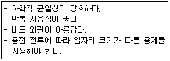
- 소결형
- 혼성형
- 혼합형
- 용융형
(정답률: 59%)
23. 기체를 수천도의 높은 온도로 가열하면 그 속도의 가스원자가 원자핵과 전자로 분리되어 양(＋)과 음(-) 이온상태로 된 것을 무엇이라 하는가?
- 전자빔
- 레이저
- 테르밋
- 플라스마
(정답률: 68%)
24. 정격 2차 전류 300A, 정격 사용률 40%인 아크용접기로 실제 200A 용접 전류를 사용하여 용접하는 경우 전체시간을 10분으로 하였을 때 다음 중 용접 시간과 휴식 시간을 올바르게 나타낸 것은?
- 10분 동안 계속 용접한다.
- 5분 용접 후 5분간 휴식한다.
- 7분 용접 후 3분간 휴식한다.
- 9분 용접 후 1분간 휴식한다.
(정답률: 59%)
25. 용해 아세틸렌 취급 시 주의 사항으로 틀린 것은?
- 저장 장소는 통풍이 잘 되어야 된다.
- 저장 장소에는 화기를 가까이 하지 말아야 한다.
- 용기는 진동이나 충격을 가하지 말고 신중히 취급해야 한다.
- 용기는 아세톤의 유출을 방지하기 위해 눕혀서 보관한다.
(정답률: 82%)
26. 다음 중 아크 절단법이 아닌 것은?
- 스카핑
- 금속 아크 절단
- 아크 에어 가우징
- 플라즈마 제트
(정답률: 68%)
27. 피복아크 용접봉의 피복제 작용을 설명한 것 중 틀린 것은?
- 스패터를 많게 하고, 탈탄 정련작용을 한다.
- 용융금속의 용적을 미세화하고, 용착효율을 높인다.
- 슬래그 제거를 쉽게 하며, 파형이 고운 비드를 만든다.
- 공기로 인한 산화, 질화 등의 해를 방지하여 용착금속을 보호한다.
(정답률: 70%)
28. 용접법의 분류 중에서 융접에 속하는 것은?
- 시임 용접
- 테르밋 용접
- 초음파 용접
- 플래시 용접
(정답률: 68%)
29. 산소 용기의 윗부분에 각인되어 있는 표시 중 최고 충전 압력의 표시는 무엇인가?
- TP
- FP
- WP
- LP
(정답률: 68%)
30. 2개의 모재에 압력을 가해 접촉시킨 다음 접촉에 압력을 주면서 상대운동을 시켜 접촉면에서 발생하는 열을 이용하는 용접법은?
- 가스압접
- 냉간압접
- 마찰용접
- 열간압접
(정답률: 76%)
31. 사용률이 60%인 교류 아크 용접기를 사용하여 정격전류로 6분 용접하였다면 휴식시간은 얼마인가?
- 2분
- 3분
- 4분
- 5분
(정답률: 72%)
32. 모재의 절단부를 불활성가스로 보호하고 금속전극에 대전류를 흐르게 하여 절단하는 방법으로 알루미늄과 같이 산화에 강한 금속에 이용되는 절단방법은?
- 산소 절단
- TIG 절단
- MIG 절단
- 플라스마 절단
(정답률: 44%)
33. 용접기의 특성 중에서 부하전류가 증가하면 단자 전압이 저하하는 특성은?
- 수하 특성
- 상승 특성
- 정전압 특성
- 자기제어 특성
(정답률: 55%)
34. 산소-아세틸렌 불꽃의 종류가 아닌 것은?
- 중성 불꽃
- 탄화 불꽃
- 산화 불꽃
- 질화 불꽃
(정답률: 64%)
35. 리벳이음과 비교하여 용접이음의 특징을 열거한 중 틀린 것은?
- 구조가 복잡하다.
- 이음 효율이 높다.
- 공정의 수가 절감된다.
- 유밀, 기밀, 수밀이 우수하다.
(정답률: 68%)
2과목: 용접재료
36. 아크에어 가우징 작업에 사용되는 압축공기의 압력으로 적당한 것은?
- 1~3kgf/cm2
- 5~7kgf/cm2
- 9~12kgf/cm2
- 14~156kgf/cm2
(정답률: 65%)
37. 탄소 전극봉 대신 절단 전용의 특수 피복을 입힌 전극봉을 사용하여 절단하는 방법은?
- 금속아크 절단
- 탄소아크 절단
- 아크에어 가우징
- 플라스마 제트 절단
(정답률: 48%)
38. 산소 아크 절단에 대한 설명으로 가장 적합한 것은?
- 전원은 직류 역극성이 사용된다.
- 가스절단에 비하여 절단속도가 느리다.
- 가스절단에 비하여 절단면이 매끄럽다.
- 철강 구조물 해체나 수중 해체 작업에 이용된다.
(정답률: 53%)
39. 다이캐스팅 주물품, 단조품 등의 재료로 사용되며 융점이 약 660℃이고, 비중이 약 2.7인 원소는?
- Sn
- Ag
- Al
- Mn
(정답률: 68%)
40. 다음 중 주철에 관한 설명으로 틀린 것은?
- 비중은 C와 Si 등이 많을수록 작아진다.
- 용융점은 C와 Si 등이 많을수록 낮아진다.
- 주철을 600℃ 이상의 온도에서 가열 및 냉각을 반복하면 부피가 감소한다.
- 투자율을 크게 하기 위해서는 화합 탄소를 적게 하고 유리 탄소를 균일하게 분포시킨다.
(정답률: 56%)
41. 금속의 소성변형을 일으키는 원인 중 원자 밀도가 가장 큰 격자면에서 잘 일어나는 것은?
- 슬립
- 쌍정
- 전위
- 편석
(정답률: 56%)
42. 다음 중 Ni - Cu 합금이 아닌 것은?(오류 신고가 접수된 문제입니다. 반드시 정답과 해설을 확인하시기 바랍니다.)
- 어드밴스
- 콘스탄탄
- 모넬메탈
- 니칼로이
(정답률: 41%)
43. 침탄법에 대한 설명으로 옳은 것은?
- 표면을 용융시켜 연화시키는 것이다.
- 망상 시멘타이트를 구상화시키는 방법이다.
- 강재의 표면에 아연을 피복시키는 방법이다.
- 홈강재의 표면에 탄소를 침투시켜 경화시키는 것이다.
(정답률: 68%)
44. 그림과 같은 결정격자의 금속 원소는?
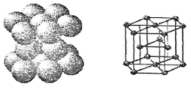
- Mi
- Mg
- Al
- Au
(정답률: 67%)
45. 전해 인성 구리는 약 400℃ 이상의 온도에서 사용하지 않는 이유로 옳은 것은?
- 풀림취성을 발생시키기 때문이다.
- 수소취성을 발생시키기 때문이다.
- 고온취성을 발생시키기 때문이다.
- 상온취성을 발생시키기 때문이다.
(정답률: 37%)
46. 구상흑연주철은 주조성, 가공성 및 내마멸성이 우수하다. 이러한 구상흑연주철 제조 시 구상화제로 첨가되는 원소로 옳은 것은?
- P, S
- O, N
- Pb, Zn
- Mg, Ca
(정답률: 51%)
47. 형상 기억 효과를 나타내는 합금이 일으키는 변태는?
- 펄라이트 변태
- 마텐자이트 변태
- 오스테나이트 변태
- 레데뷰라이트 변태
(정답률: 45%)
48. Y합금의 일종으로 Ti과 Cu를 0.2% 정도씩 첨가한 것으로 피스톤에 사용되는 것은?
- 두랄루민
- 코비탈륨
- 로엑스합금
- 하이드로날륨
(정답률: 38%)
49. 시험편을 눌러 구부리는 시험방법으로 굽힘에 대한 저항력을 조사하는 시험방법은?
- 충격시험
- 굽힘시험
- 전단시험
- 인장시험
(정답률: 80%)
50. Fe-C 평 형상태도에서 공정점의 C%는?
- 0.02%
- 0.8%
- 4.3%
- 6.67%
(정답률: 49%)
3과목: 기계제도
51. 다음 용접 기호 중 표면 육성을 의미하는 것은?
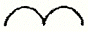
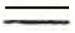
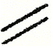
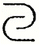
(정답률: 69%)
52. 배관의 간략 도시방법에서 파이프의 영구 결합부(용접 또는 다른 공법에 의한다) 상태를 나타내는 것은?
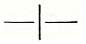
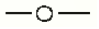
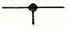
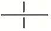
(정답률: 71%)
53. 제3각법의 투상도에서 도면의 배치 관계는?
- 평면도를 중심하여 정면도는 위에 우측면도는 우측에 배치된다.
- 정면도를 중심하여 평면도는 밑에 우측면도는 우측에 배치된다.
- 정면도를 중심하여 평면도는 위에 우측면도는 우측에 배치된다.
- 정면도를 중심하여 평면도는 위에 우측면도는 좌측에 배치된다.
(정답률: 68%)
54. 그림과 같이 제3각법으로 정투상한 각뿔의 전개도 형상으로 적합한 것은?
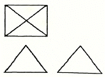
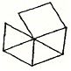
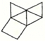
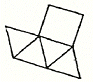
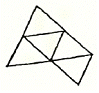
(정답률: 64%)
55. 도면에 대한 호칭방법이 다음과 같이 나타날 때 이에 대한 설명으로 틀린 것은?
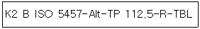
- 도면은 KS B ISO 5457을 따른다.
- A1 용지 크기이다.
- 재단하지 않은 용지이다.
- 112.5g/m2 사양의 트레이싱지이다.
(정답률: 56%)
56. 그림과 같은 도면에서 나타난 "□40" 치수에서 "□"가 뜻하는 것은?
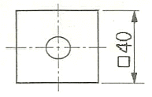
- 정사각형의 변
- 이론적으로 정확한 치수
- 판의 두께
- 참고치수
(정답률: 75%)
57. 그림과 같이 원통을 경사지게 절단한 제품을 제작할 때, 다음 중 어떤 전개법이 가장 적합한가?
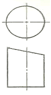
- 사각형법
- 평행선법
- 삼각형법
- 방사선법
(정답률: 70%)
58. 다음 중 가는 실선으로 나타내는 경우가 아닌 것은?
- 시작점과 끝점을 나타내는 치수선
- 소재의 굽은 부분이나 가공 공정의 표시선
- 상세도를 그리기 위한 틀의 선
- 금속 구조 공학 등의 구조를 나타내는 선
(정답률: 37%)
59. 그림과 같은 도면에서 괄호 안의 치수는 무엇을 나타내는가?
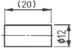
- 완성 치수
- 참고 치수
- 다듬질 치수
- 비례척이 아닌 치수
(정답률: 70%)
60. 다음 중 일반 구조용 탄소 강관의 KS 재료 기호는?
- SPP
- SPS
- SKH
- STK
(정답률: 52%)